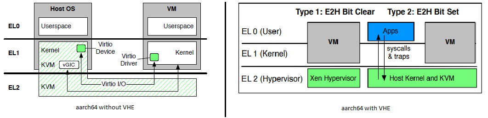
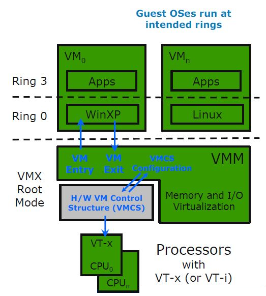
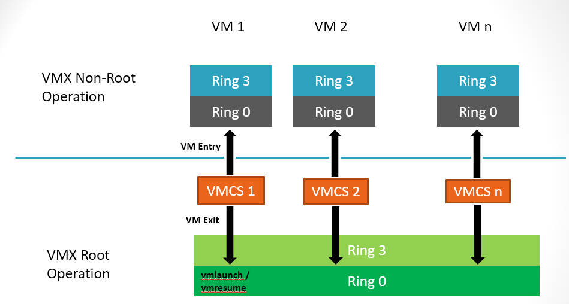
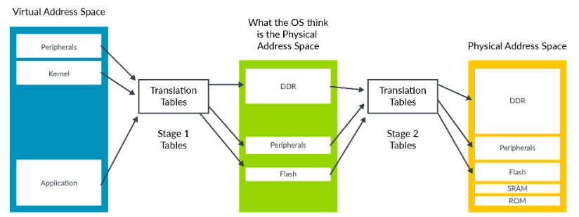
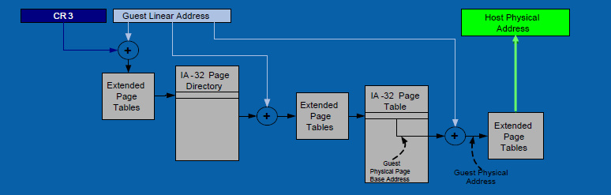

Virtualization: aarch64 vs x86_64
Virtualization Generations
Full-virtualization -> Para-virtualization -> Hardware-assisted virtualization -> Offload-virtualization -> ?
Types of virtualization
To understand virtualization, hpervisor should be addressed firtst. Hypervisor enables communication between hardware and a virtual machine so that the virtualizaion accomplished with this abstraction layer(hypervisor). While there is another word virtual machine monitor(VMM), those two terms are typically treated as synonyms. But there is a slightly distinction, a virtual machine monitor is a software that mnages CPU, memory, I/O data transfer, interrupt, and the instruction set on a given virtualized environment, a hypervisor may refer to an operating system(OS) with the VMM.
Typically, a hypervisor can be divided into two Type 1 and Type 2 hypervisor based on the different level of implementation. Type 1 is sitting on hardware and the communication between hardware and virtual machine is direct, somtime called ‘bare metal hypervisor’. Type 2 hypervisor is on the operating system to manage virtual machine easily with the support of hardware configuration from operating system.
| Types | Level of Implementation | Typical Hypervisor |
|---|---|---|
| Type 1 | bare metal | ESXi, XEN, Hyper-V |
| Type 2 | with OS | Virtual Box, KVM |
Virtualization also divided into full virtualizaton, para-virtualization and hardware-assited virtualization(direct access to resources without binary translation or emulation) from the view of GuestOS.
Virtualization overhead and micro-benchmark
The hypervisor introduces overheads in emulating inter-processor interrupts (IPIs), TLB invalidation(TLB flush IPI), and transitions to/from idle modes, among others. Semantic gap between the guest OS and hypervisor also causes double scheduling, where the guest and host-level CPU schedulers make independent, but inefficient, scheduling decisions.
| Name | Descripton | Measure method | Measure Tool |
|---|---|---|---|
| Hypercall | Transition freom VM to hypervisor and return to VM without doing any work in the hypervisor. | Measures bidirectional base trasition cost of hypervisor operatons. | NA |
| Interrupt Controller Trap | Trap from VM to emulated interrupt controller then return to VM. | Measures a frequent operation for many device drivers and baseline for accessing I/O devices emulated in the hypervisor. | NA |
| Virtual IPI | Issure a virtual IPI freom a vCPU to another vCPU running on a different pCPU, both pCPUs executing VM code. | Measures time between sending the virtual IPI until the receiveing vCPU handles it, a frequent operation in multi-core OSes that affects many workloads. | NA |
| Virtual IRQ Completion | VM acknowledging and completing a virtual interrupt. | Measures a frequent operation taht happerns for every injected virtual interrupt. | NA |
| VM Switch | Switching freom one VM to another on the same physical core. | Measures a central cost when over-subscribing physical CPUs. | NA |
| I/O Latency In | Measures latency between a driver in the VM signaling the virtual I/O device in the hypervisor and the virtual I/O device receiving the signal. | For KVM , this involves trapping to the host kernel. For xen, this involves trapping to xen then raising a virtual interrupt to Dom0 | NA |
| I/O Latentcy Out | Measures latency between the virtual I/O device in the hypervisor signaling the VM and the VM receiving the corresponding virtual interrupt. | For KVM , this involves signaling the vCPU thread and injecting a virtual interrupt for the virtio device. For XEN, this involves trapping to Xen then raising a virtual interrupt to DomU. | NA |
All measures unit in cycles by call tsc(Time Stamp Counter).
Hardware-assisted virtualization technology
CPU Virtualization
- VHE and VTx
- aarch64, Virtualization Host Extensions(VHE), vmid/asid
 - x86_64 VTx: vmcs, root and non-root mode, vpid.

- aarch64, Virtualization Host Extensions(VHE), vmid/asid
- Privilege levels
- aarch64 excpetion level, EL 0(userspace applications), EL 1(guest kernel), EL 2(host kernel/hypervisor), EL 3(secure)
- x86_64 ring, ring 0(hypervisor under root mode, guest under non-root mode), ring 1, ring 2, ring3(applications)

- VHE and VTx
Memory Virtualization
- GVA to PHA translation
- aarch64, stage 2 translation, GVA –mmu-> IPA/GPA –mmu-> HPA
 - x86_64, extended page tables(EPT)

- aarch64, stage 2 translation, GVA –mmu-> IPA/GPA –mmu-> HPA
- GVA to PHA translation
- IO & Timers & Interrupt Virtualization
| types | x86_64 | aarch64 |
|---|---|---|
| IO | IOMMU(vIOMMU) | SMMU(vSMMU) |
| Timers | pmtimer | the generic timers |
| Virtual interrupt | APIC(vAPIC) | GIC(vGIC) |
Timers Notes:
Real time is expressed in nanoseconds passed since machine boot and is maintained to the accuracy of the processor’s cycle counter and can be frequency-locked to an external time source (for example, via NTP).
A domain’s virtual time only advances while it is executing: this is typically used by the guest OS scheduler to ensure correct sharing of its timeslice between application processes.
Finally, wall-clock time is specified as an offset to be added to the current real time. This allows the wall-clock time to be adjusted without affecting the forward progress of real time.